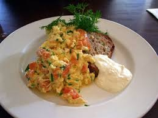

Home
Salmon and Scrambled Eggs on Toast

Description
A quick and easy delicious breakfast to start your day.
Ready to eat in under 30 minutes.
Ingredients:
- 1tbsp butter
- 2 large free range eggs
- 1tbsp milk
- 1 slice wholemeal bread
- 2 slices smoked salmon
- Salt and freshly ground pepper
Steps:
- Melt the butter in a saucepan over a low heat.
- Add the eggs and stir continuously for 5 minutes.
- Once the eggs are thick, add the milk.
- Remove pan from the heat and season with the salt and pepper.
- Spoon the scrambles eggs onto the buttered toast and place the salmon ontop.